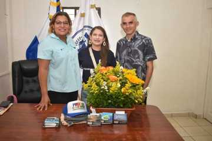

COMMUNITY
BAHÍA DE JIQUILISCO • EL SALVADOR
Working together to protect the ecosystems, wildlife and communities of Bahía de Jiquilisco.
OUR MISSION
Friends of Jiquilisco Bay supports conservation, environmental education, community involvement and direct action to help preserve one of El Salvador's extraordinary coastal environments.
OUR IMPACT
Real projects. Real people. A cleaner, healthier bay.


CLEANUP CAMPAIGN
Volunteers joined Friends of Jiquilisco Bay in hands-on cleanup work, helping remove waste while building awareness around responsible stewardship of the bay.
OUR STORY
During a visit to El Salvador, the founder of Friends of Jiquilisco Bay experienced Bahía de Jiquilisco and fell in love with its waterways, mangroves, wildlife, beaches and communities.
Read our story →
STORIES FROM THE BAY

We have donated 20+ waste receptacles throughout the port area of Puerto El Triunfo.
HELP PROTECT JIQUILISCO BAY
Your contribution helps support environmental cleanups, conservation initiatives, education and community projects.
DONATESecure donations are processed through Zeffy.